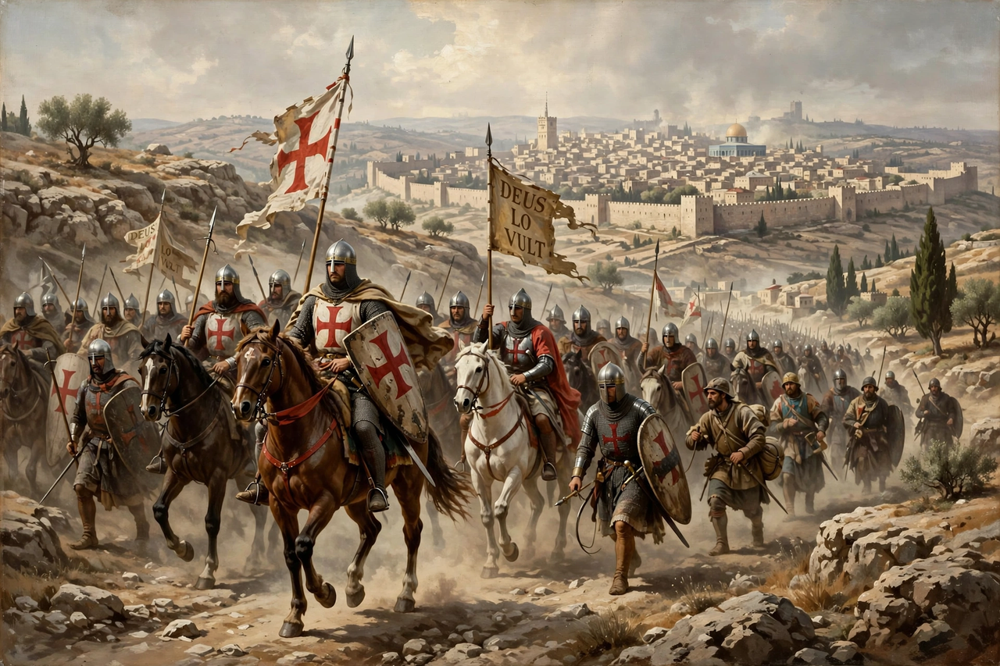

The First Crusade (1096–1099) was the first of a series of religious wars, or Crusades, initiated, supported and at times directed by the Latin Church in the medieval period. The objective was the recovery of the Holy Land from Muslim rule. It was launched by Pope Urban II at the Council of Clermont in November 1095, in response to a Byzantine appeal for aid against the Seljuk Turks.

| First Crusade | |
|---|---|
| Date | 1096–1099 |
| Location | Anatolia and the Levant |
| Result | Crusader victory |
| Territorial changes | Kingdom of Jerusalem, County of Edessa, Principality of Antioch, County of Tripoli founded |
| Key figures | Godfrey of Bouillon, Bohemond of Antioch, Raymond of Toulouse, Alexios I Komnenos |
After the Byzantine defeat at Manzikert (1071), Emperor Alexios I Komnenos asked the West for mercenaries. Urban II's sermon at Clermont promised remission of sins to those who took the cross.
An ill-organised popular movement led by Peter the Hermit reached Anatolia first and was largely destroyed by the Turks at Civetot in 1096. Along the way, bands perpetrated the Rhineland massacres of Jewish communities.
The main armies besieged Nicaea (1097), won at Dorylaeum, endured the Siege of Antioch (1097–98), and marched south. Jerusalem was captured on 15 July 1099 after a five-week siege, accompanied by a massacre of its inhabitants. Godfrey of Bouillon became its first Latin ruler, styled Advocate of the Holy Sepulchre.
The crusade established four Crusader states in the Levant and inaugurated two centuries of crusading. It is narrated in chronicles such as the anonymous Gesta Francorum and Fulcher of Chartres.
Recreated from memory.